Swipe me!
(Swipe me)
wojtus7.fun
My name is Wojciech Stanisz.
I am thrilled to take you on a journey through my life's passions and experiences!
So come along with me, and let's discover all the things that make this life so beautiful together.
First Stage: The Lupo
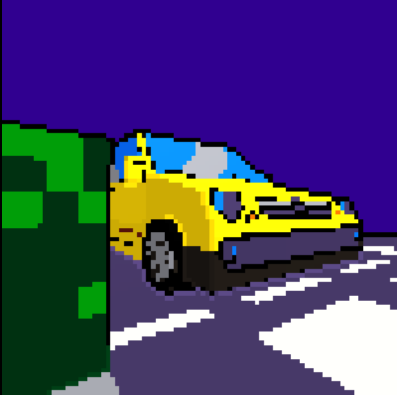
My beloved Volkswagen Lupo may not be the fastest on the street, but it holds a special place in my heart. As the weakest 1.0 version from 1999, it may not be the flashiest car in the world, but with it's bright yellow color it still can draw some attention and make people smile - and that's most important for me.
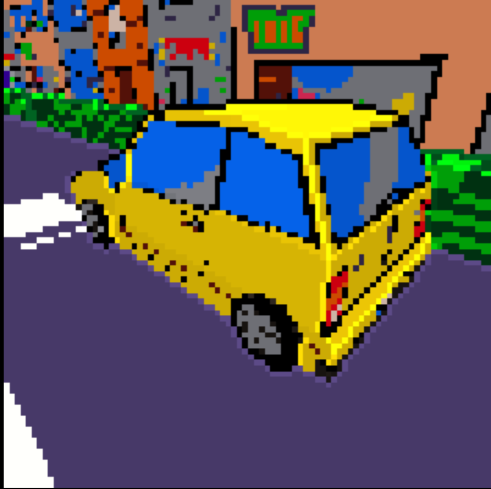
Owning a classic car like the Lupo isn't just about getting from Point A to Point B, it's about the journey, and the sense of nostalgia it brings. And while my Lupo may be considered outdated, to me, it is timeless, a symbol of my history and personality.
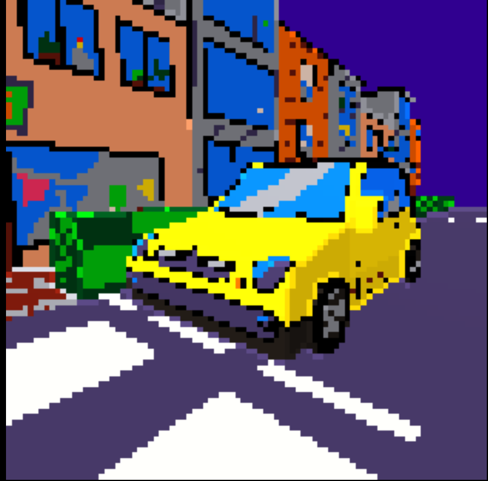
I believe that owning an old well-maintained small car and using it only when necessary is a more eco-friendly option than buying a new electric car, which has a larger manufacturing footprint and a limited lifespan due to battery degradation.
*...and that's why I will keep improving it, take good care of it and try to keep it in excellent condition as long as possible.
Second Stage: Vintage music formats and hardware
Giving old items a second chance, I'm not only doing my part for the planet, but I'm also bringing a little piece of history into my everyday life.
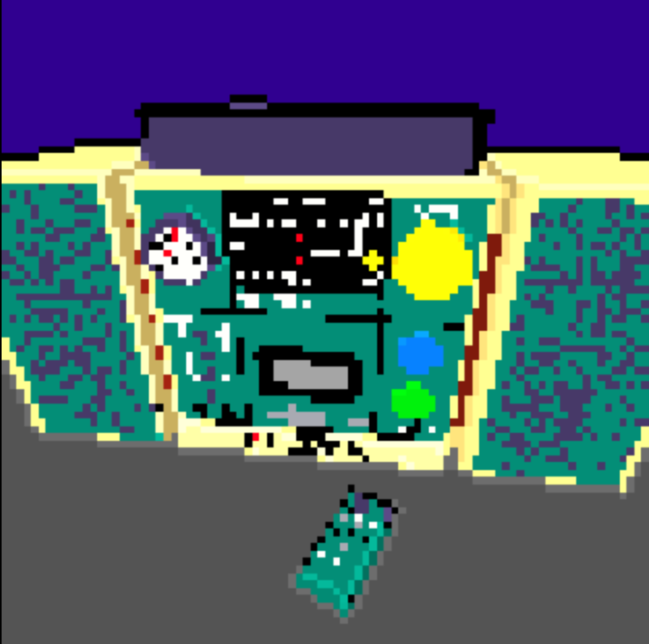
I believe in the beauty of transforming old, discarded items into something new and precious again. Every piece I rescue has a story to tell, from its original creation to the journey it took to land in my hands.
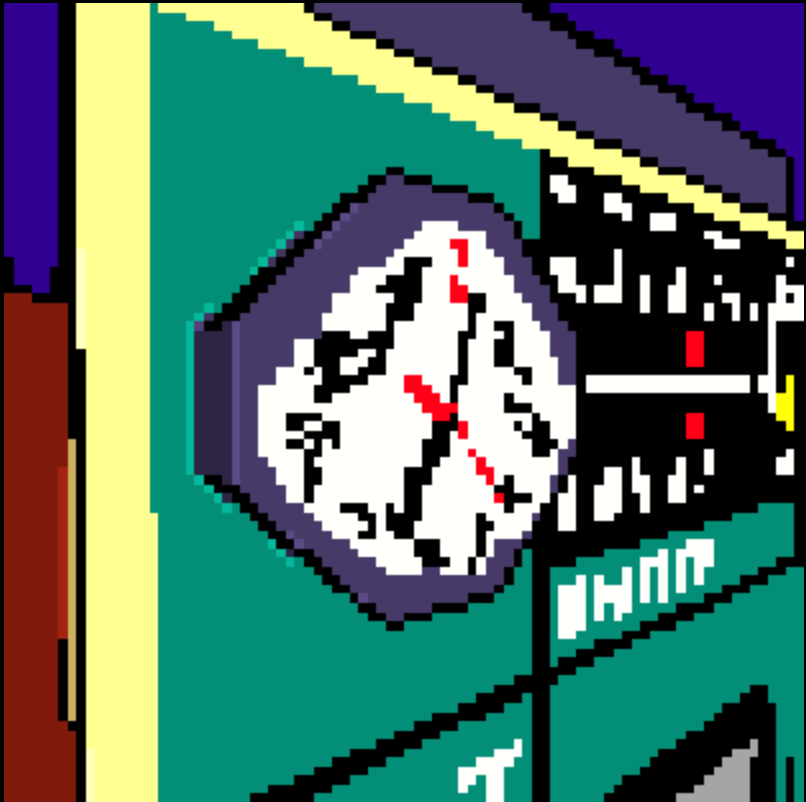
Old technology often comes with wacky designs and strange features. Many people smile and reminisce when they learn about these retro relics. There's something about the clunky keyboards, satisfying clicks, and dial-up tones that bring a little bit of joy to our lives and remind us of simpler days gone by.
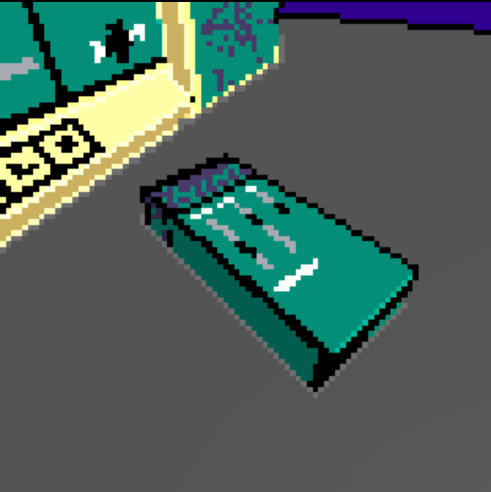
Third Stage: Fun of climbing
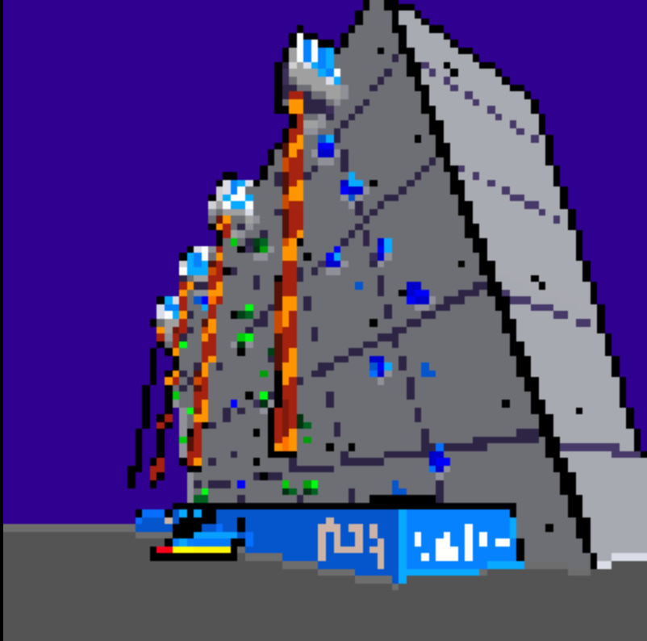
Sports like racing, football, and basketball can be incredibly stressful. The pressure to win, to be the best, and to outperform others can take a toll on my emotional well-being. As a result, I sought out sports and activities that were less about competition and more about personal growth and achievement.
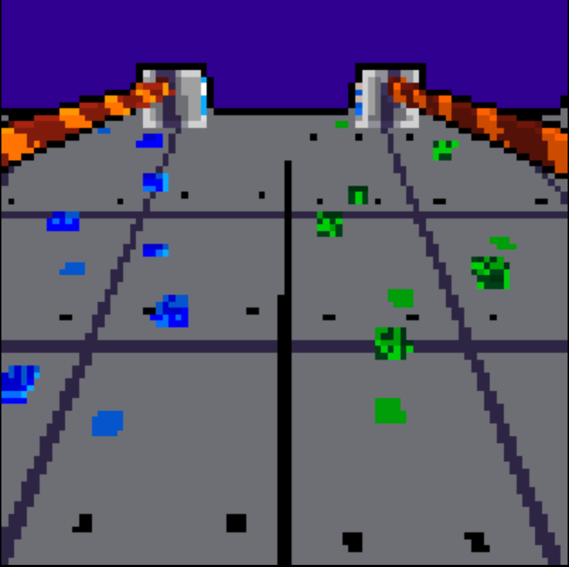
Climbing is not just a physical challenge, but a mental one as well, requiring patience, persistence, and problem-solving skills. And yet, with each successful climb, I feel a sense of accomplishment and pride that I have never felt before.
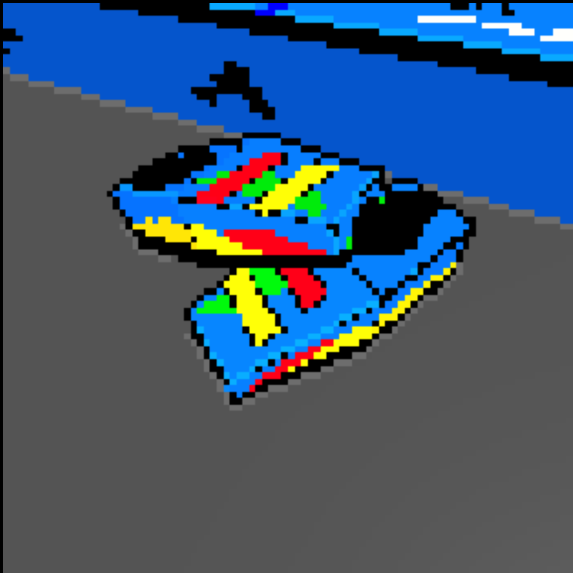
With climbing, there is no opposition or competition, but rather a sense of friendship and cooperation as we tackle difficult routes together. We work as a team to support and encourage each other, to find new techniques and strategies that will help us conquer even the most daunting climbs.
Forth Stage: Brotherhood of Board Games
Both board games and tabletop RPGs hold a special place in my heart and have become an integral part of my life, providing countless hours of entertainment and enjoyment.
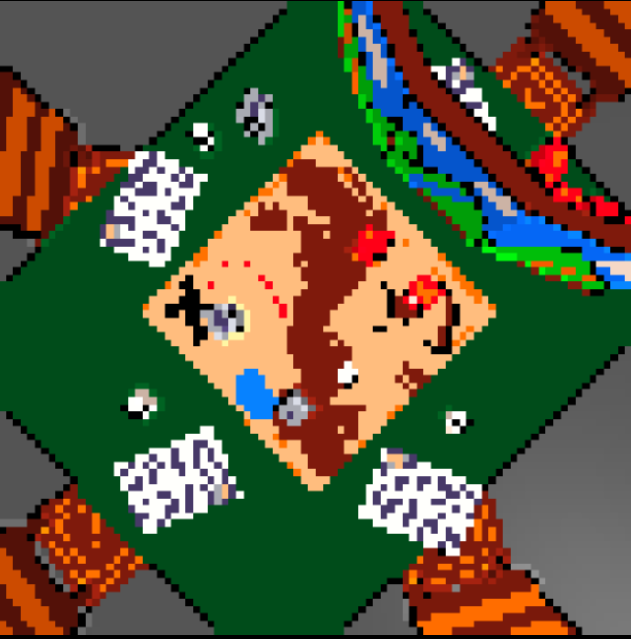
Tabletop RPGs have helped me become more confident and comfortable in social interactions. I found that the imaginative world provided by the game allowed me to break free of my usual inhibitions and engage more openly with the other players.
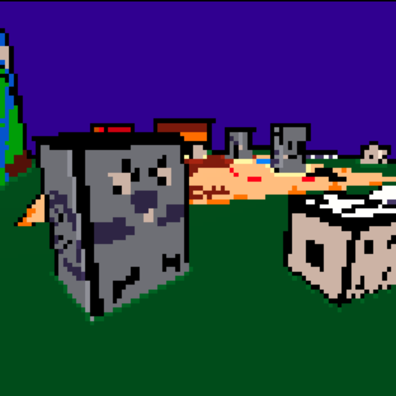
Great games I recommend:
*Roll Camera
*Seize the Bean
*Dungeon Drop
*Reigns: The council
*Modern Art
*Hot Rod Creeps
*RagnaRok Star
*Ca$h'n Guns
*Happy City
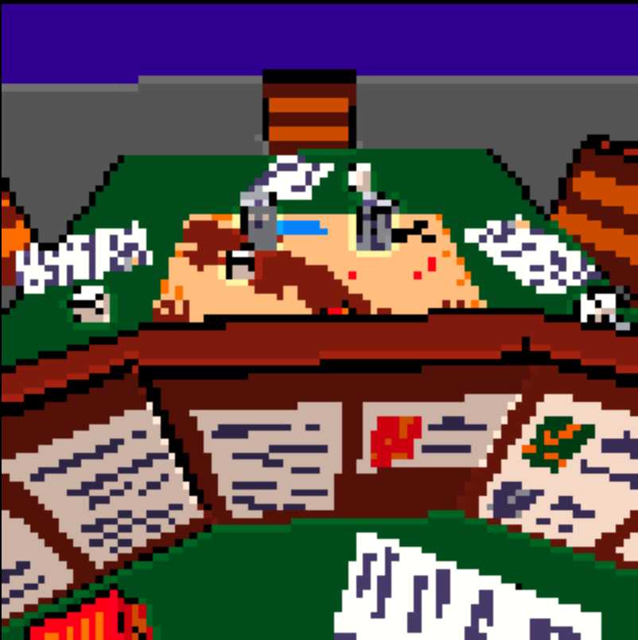
Fifth Stage: Parties with Video Games
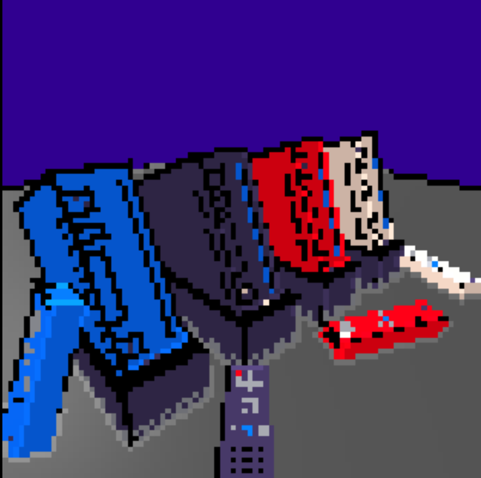
I used to enjoy playing solo games for hours on end, but as I grew older and faced more daily struggles, I found it increasingly difficult to focus and enjoy them. Now, I mostly complete complex solo games only during vacations.
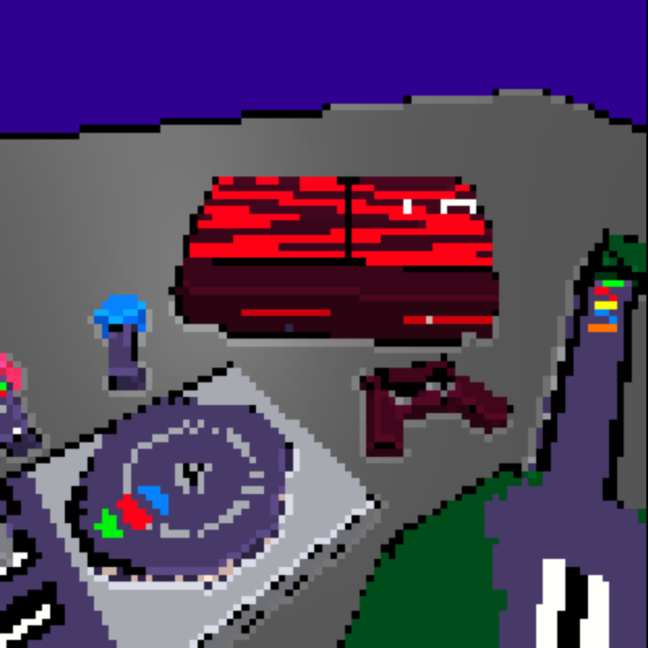
List of my personal favorites
solo games:
*Persona 5 Royal
*The world ends with you
*Fallout 3 and New Vegas
*Death Stranding
*Ghost Trick
*Split-second
*Ni no kuni: II
*Xenoblade Chronicles
*Burnout Paradise
And many many many more...
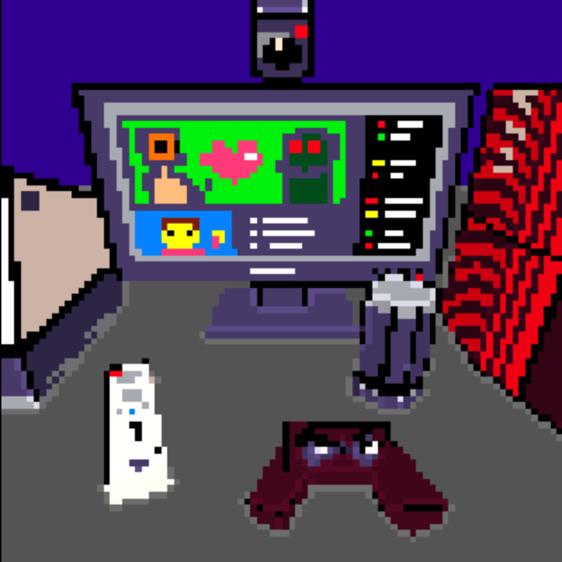
I realized that I needed a change of pace, something that would not only entertain me but also help me to unwind and connect with people. That's when I discovered the beauty of party games with friends. Friendly competition, and lighthearted atmosphere bring me a sense of joy and comfort that solo games could not provide.
Final Stage: Being afraid
I prefer you only read this part if you've already read all things above. But feel free to open it whenever you want
![]()
Even though every day I try to bring joy to this world, I don't understand it at all.
I don't understand why we don't take climate change seriously and would rather see our children burn than take small inconveniences to stop it.
I don't understand why people reject or harm others simply because of their sexuality or nationality.
Yes, I'm very afraid of not being able to understand the basic principles of this world. And I just wanted to say:
If you are also afraid, you are not the only one. There are a lot of us waiting for a peaceful tomorrow.
So don't ever give up.
You are a wonderful person.
You are beautiful.
Want to play with me?
Click here
Click button above to see
*something special*